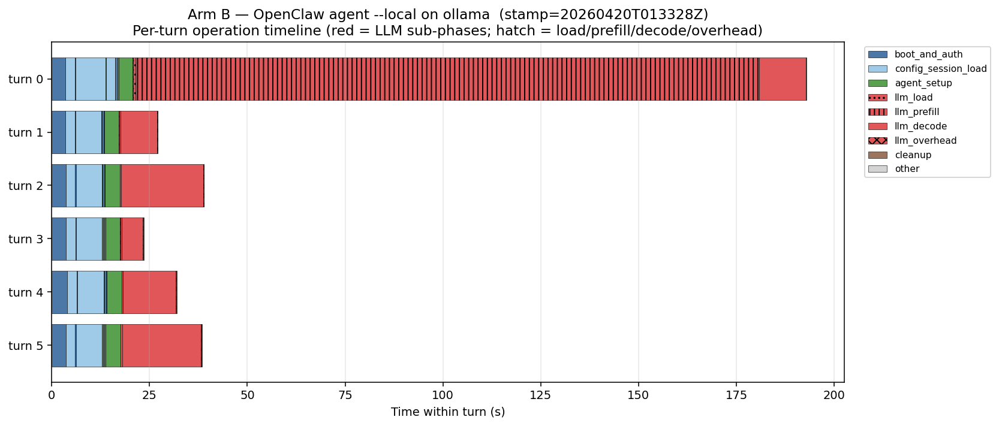
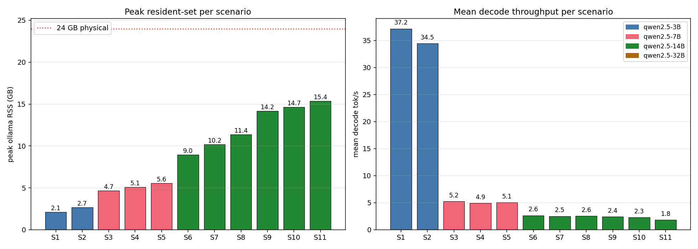
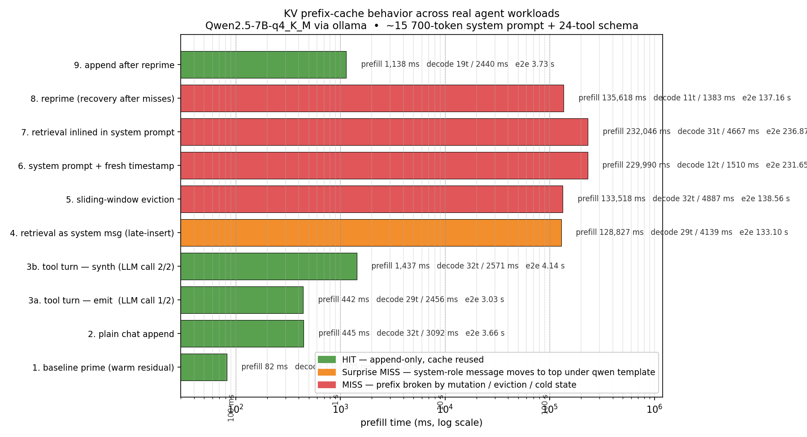
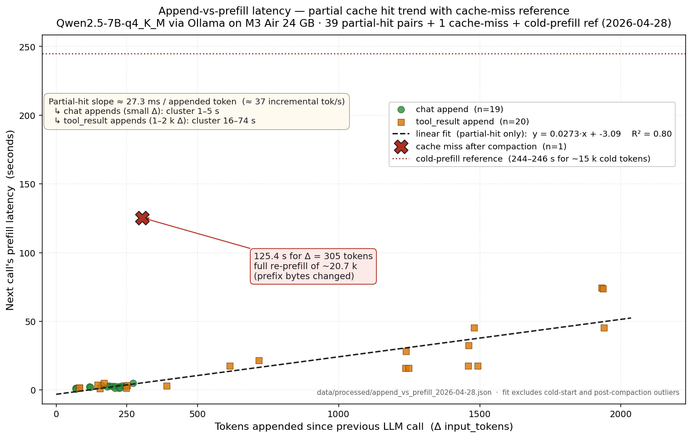

|
Research Interests
My research focuses on the intersection of machine learning and systems, with particular emphasis on:
- Machine Learning Systems: Optimizing the training and inference of large-scale ML models
- Distributed Computing: Efficient parallelization strategies for deep learning workloads
- Compiler Optimization: Automatic optimization of ML computations for various hardware backends
- Memory Management: Novel techniques for training larger models with limited memory
- Hardware-Software Co-design: Designing systems that leverage modern accelerators effectively
|
|
Featured Research: LinuxGuard
My primary focus at ADSL is LinuxGuard, a pipeline that learns from Linux kernel bug fixes to generate custom
clang-tidy checkers. By mining commit history, the system builds AST matchers that flag unchecked error paths across
kernels v3.0 through v6.0, turning each fixed vulnerability into a proactive safeguard.
- End-to-end automation: bug mining, checker synthesis, LLVM build, and multi-version scans.
- Flagship checker:
linuxkernel-must-check-errs catches missing error handling at scale.
- 200+ unchecked error flows surfaced per kernel release, revealing long-lived anti-patterns.
|
|
WukLab @ UCSD — Prof. Yiying Zhang
As a remote research intern at WukLab, I work with
Professor Yiying Zhang on two complementary threads at the LLM-systems
interface: using LLMs to produce better low-level code, and using systems measurement to understand
what really limits LLM serving on commodity edge hardware.
|
|

|
LLM-driven Low-level Code Optimization
Xuming Huang, advised by Yiying Zhang — WukLab, UC San Diego
2025–present · Ongoing
Building an agent loop that takes a reference kernel, proposes compiler-grade transformations
(vectorization, tiling, register-pressure reduction), then verifies each candidate by
running it against the original and benchmarking the survivors. The goal: close the gap between
LLM-suggested code edits and the kind of optimizations a production compiler engineer would accept.
- Pipeline: propose → sandbox-execute → differential-test → profile, fully closed-loop.
- Targets numerical and memory-bound kernels where the search space is too large for hand tuning.
- Co-designed with the edge-inference workload below so the optimized kernels can be shipped to the same M-series device profile.
|
|

|
System Optimization for Edge Device Inference
Xuming Huang, advised by Yiying Zhang — WukLab, UC San Diego
2025–present · Ongoing
A measurement-first study of what actually governs latency for agentic LLMs running entirely on-device.
We drive ollama serving qwen2.5 (3B / 7B / 14B at q4_K_M) on a 24 GB M3 MacBook Air through an
11-scenario sweep that walks the model-vs-KV-cache budget, and through an 8-scenario suite that exercises
OpenClaw's prefix cache under cold prime, plain append, retrieval-inlined, session growth, and auto-compaction
workloads.
- Memory-budget model:
RSS ≈ model_GB + parallel × num_ctx × KV_q8_bytes + 0.3 GB, mean abs. error 10.2 % across 11 scenarios.
- Found a page-compressor cliff at
parallel=3 on 14B / 32k ctx where observed RSS stops tracking predicted by 20–28 %.
- Quantified a 35× prefill spike caused by auto-compaction breaking the ollama prefix cache between two consecutive turns.
- Showed decode is bandwidth-bound: 3B ≈ 35 tok/s, 7B ≈ 5 tok/s, 14B ≈ 2.5 tok/s, near-constant across context length.
Current phase: running the full 361-task OSWorld-Verified benchmark with
Holo3-35B-A3B — the #1 open-weight computer-use model —
served entirely on an Intel Panther Lake NUC (96 GB unified, CPU-only llama.cpp after measured GPU/NPU bring-up),
replicating the official leaderboard config (100-step budget, screenshot-only) with per-step latency, token,
KV-cache and 5-domain RAPL energy profiling.
[🔴 Live benchmark tracker]
[Interactive workflow demo]
[Memory hierarchy demo]
|
|

KV prefix-cache hit / miss / surprise-miss behavior across 8 OpenClaw workloads. Auto-compaction (scenario 8) drives the longest prefill bar.
|

Append-token count vs. next call's prefill latency across 39 partial-hit data points — the cache-miss event sits ~24× off the trend.
|
|
Research Projects
Representative projects are highlighted.
See also my Google Scholar profile.
|
|